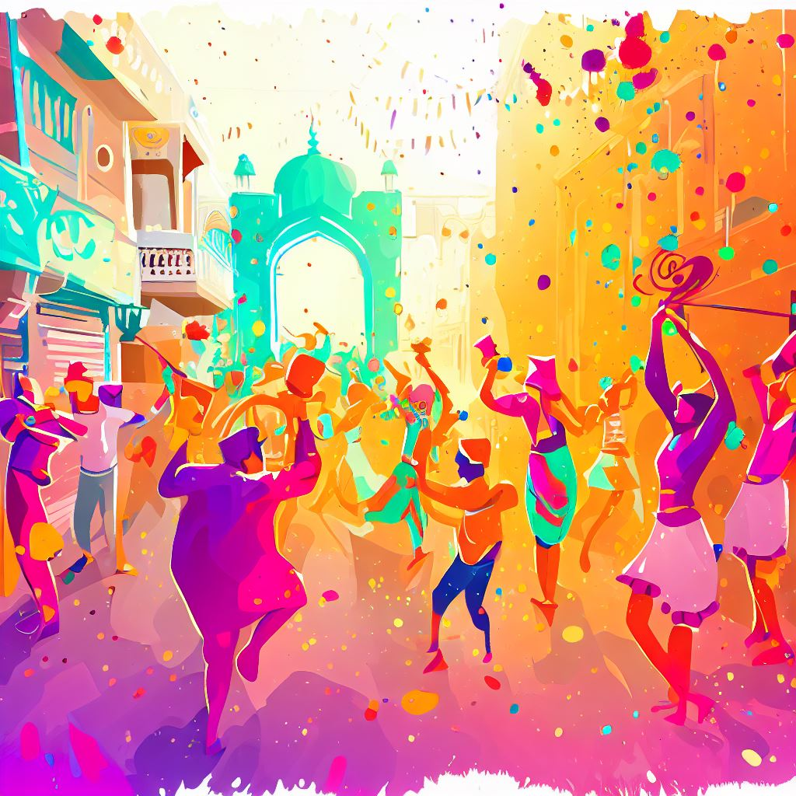

The Holi festival is an ancient Hindu festival with its own cultural rituals. The festival finds color in numerous scriptures, such as in works like Jaimini's Purva Mimamsa Sutras and Kathaka-Grhya-Sutras with even more detailed descriptions in ancient texts like the Narad Purana and Bhavishyad Purana.

The festival of "holikotsav" was also mentioned in the 7th century work, Ratnavali, by King Harsha.[41] It is mentioned in the Puranas, Dasakumara Charita, and by the poet Kālidāsa during the 4th century reign of Chandragupta II.[10] The celebration of Holi is also mentioned in the 7th-century Sanskrit drama Ratnavali.[42]
The festival of Holi caught the fascination of European traders and British colonial staff by the 17th century. Various old editions of the Oxford English Dictionary mention it, but with varying, phonetically derived spellings: Houly (1687), Hooly (1698), Huli (1789), Hohlee (1809), Hoolee (1825), and Holi in editions published after 1910.[18]